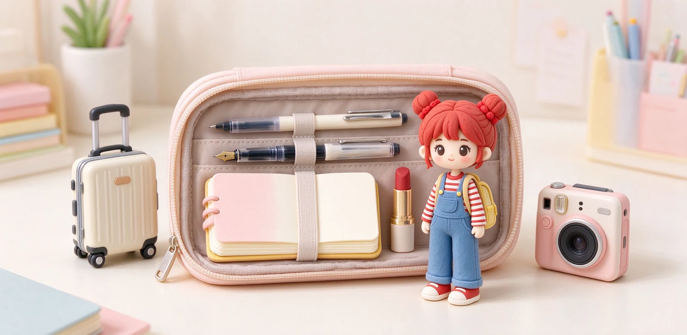
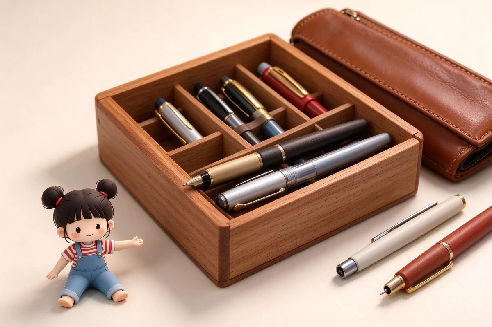
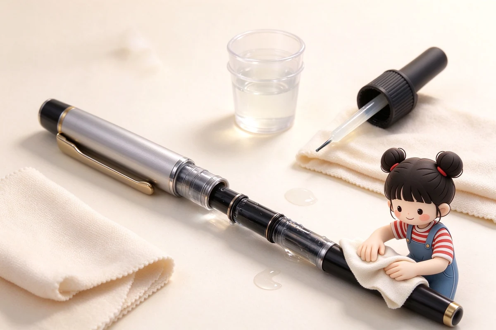

語意摘要：出門文具不求多而求順手，一支中性筆、一支鋼筆（用卡式墨水管）加一本可平攤的小筆記本，就足以應付大部分旅途紀錄。鋼筆與瓶裝墨可帶上飛機，但要符合 100ml 液體規定並做好防漏；真正會毀掉旅行文具的從來不是安檢，而是壓艙行李裡洩出來的墨水。
出門到底要帶幾支筆？三支剛好、五支太多
很多人一打包就失控，把筆筒裡一半的筆都塞進去，結果壓包包裡互相撞、筆蓋鬆了蹭得整包都是。旅行的筆要精不要多，其實「一支日常書寫＋一支裝飾／收藏＋一支備用」就夠。
| 角色 | 建議帶什麼 | 為什麼 |
|---|---|---|
| 主力書寫 | 速乾中性筆 0.5mm | 不怕氣壓、不怕漏、掉地上也不心疼 |
| 手感升級 | 鋼筆（卡式墨水管） | 寫手帳有儀式感，卡水比瓶裝墨安心 |
| 備用／簽名 | 原子筆一支 | 信用卡簽單、飯店登記最可靠，漏油也不慌 |
| 其他 | 螢光筆或小膠帶擇一 | 貼機票、標記行程，不是每次都需要 |
那本筆記本反而比筆重要。出門建議帶可 180 度平攤、約 A6 或 B6 大小的輕裝本，塞得進大衣口袋，坐火車、等咖啡時一翻開就能寫；又大又厚的旅行日記，多半回來時還是空白。
鋼筆能帶上飛機嗎？會不會漏得整包都是
可以帶，鋼筆不管隨身還是託運都不被禁止，真正的麻煩是氣壓。飛機爬升後客艙氣壓變低，筆桿墨水倉裡的空氣會膨脹，把墨水往筆尖方向推，降落時又縮回來，一進一出就可能滲出來。
玩家界行之有年的做法很簡單：隨身攜帶、筆尖朝上放（nib-up）、出發前把墨水量用掉一些接近半滿或乾脆改用卡式墨水管。卡式墨水是密封的鋁塑管，比吸墨器吸滿瓶裝墨抗壓得多。千萬別把裝滿瓶裝墨的鋼筆丟進壓艙行李。

行動書寫包的最小清單：一張表抄走
下面這包總重大概落在 150 到 250 克，放得進公事包或後側袋，是我們覺得 CP 最高的配法：
- 速乾中性筆 ×1：黑筆寫正式紀錄。
- 鋼筆 ×1（卡式墨水管，另備 1 卡備用）。
- 原子筆 ×1：應付簽單與陌生紙張。
- A6／B6 可平攤筆記本 ×1。
- 小型橡皮擦 ×1（如需帶鉛筆）。
- 拭鏡紙或微布 ×1：擦筆尖、擦手汗。
筆袋怎麼選？防壓、好開、能立起來
旅行用的筆袋跟學生鉛筆袋不一樣，重點是「防撞」與「好拿」。軟布袋雖輕，但塞在背包底被電腦壓到，鋼筆筆蓋容易鬆脫。商務出差建議挑有一定挺度、拉鏈好開的款式；如果只有一兩支筆，一個筆套（rollpen case）或有絨布內裡的硬殼筆盒就很夠。
一個實際的旅行打包順序
- 行前一天：把鋼筆墨水用掉一些，或直接換卡式墨水管。
- 筆尖朝上放進筆袋，外頭再套一個夾鏈袋雙保險。
- 瓶裝墨若要帶，確認單瓶 ≤100ml，放進透明液體袋。
- 筆記本放隨身包好拿的位置，不要壓在最底層。
- 落地後先在飯店寫一頁試寫，確認每支筆都正常再放心用。
常見問題 FAQ
鋼筆可以帶上飛機嗎？
瓶裝鋼筆墨水上飛機有規定嗎？
出門帶幾支筆剛好？
旅行用筆袋要選哪種？
出國玩需要帶水彩或色鉛筆嗎？
資料來源與核實依據
- Can I Take a Fountain Pen on a Plane?（氣壓變化與防漏墨建議）（TravelGoEat）
- Can You Bring Fountain Pens On A Plane? Nibs-Up Guide（Check In, Carry On）
- Flying with Fountain Pens: How to Avoid Airplane Leaks（墨水瓶 100ml 隨身規定）（Springfield Pens）
相關文章推薦

鋼筆筆盒怎麼選？防滾、防壓、攜帶與收藏筆盒的推薦邏輯
鋼筆筆盒的核心需求就三個：不要讓筆在裡面亂滾、不要被外面壓到、內裡要軟到不會刮傷筆身；先認這三點再談材質與外觀。

鋼筆多久洗一次？鋼筆清洗、換墨水與收筆完整步驟
鋼筆其實不用天天洗，但有兩個時機一定要沖：換顏色前、跟要放超過兩週不寫時。用室溫清水把筆舌沖到水變清，是所有保養的基本功。

瓶裝墨水跟卡式墨水匣哪個划算？成本、攜帶與用量實際試算
算給你看：卡式墨每毫升大約是瓶裝墨的五到六倍價錢，但它贏在乾淨、好帶、不弄髒；用量少或常外出，卡水划算，天天寫就上吸墨器。